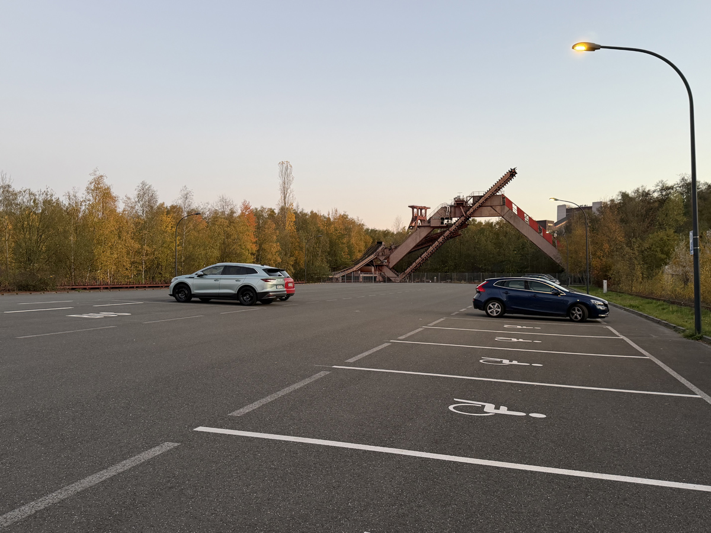

Route wählen und Weihnachtsrallye starten
Drei Routen, jede Menge Weihnachtsstimmung und gemeinsame Foto-Challenges auf Zollverein.
❄️ Bitte noch etwas Geduld
Diese Route wird noch vom Schnee geräumt. Bitte noch etwas warten.
Mut zur LBrücke?
Gemeinsam oder getrennt?
Die Gruppe kann gemeinsam einen der beiden Wege wählen oder sich aufteilen: Ein Teil geht über die Mannschaftsbrücke, der andere darunter entlang.
Am Ende der Brücke treffen sich alle auf der Ringpromenade wieder. Erst wenn die Gruppe vollständig ist, geht es gemeinsam weiter zu HUMANITAS.

Die Nahaufnahme konnte nicht geladen werden. Bitte prüfen, ob mannschaftsbrueckenah.jpg im Hauptverzeichnis des GitHub-Repositories liegt.
Mut zur LBrücke?
📸 Foto-Challenge: Wiedersehensfreude
Oben auf der Brücke oder unten auf dem Weg: Jetzt ist ein bisschen großes Kino gefragt.
Fotomotiv: Die Gruppe kann sich aufteilen: Ein Teil steht auf der Mannschaftsbrücke, der andere darunter. Fotografiert euch gegenseitig und tut so, als würdet ihr eure Verwandten an Weihnachten endlich wiedersehen. Große Gesten, ausgebreitete Arme und überschwängliche Freude sind ausdrücklich erwünscht.
Wer gemeinsam oben oder unten bleibt, kann die Szene natürlich auch auf einer Ebene nachstellen.
Alle wieder beisammen?
Beide Wege führen zur rot beleuchteten Ringpromenade. Falls die Gruppe sich aufgeteilt hat, hier wieder zusammenfinden und auf alle warten.
⚠️ Aufgepasst: Jetzt nicht verlaufen!
Etappe 1: Von der Kokerei zum Parkplatz
Von der Kokerei geht es hinunter zur Straße und über die auf die andere Straßenseite.
Nach dem Überqueren der Straße hinter der Mauer den nehmen. Diesem bis zum großen, beleuchteten folgen.

Etappe 2: Zurück auf die Ringpromenade
Den Parkplatz bis zum Ende durchqueren, bis zur riesigen Stahlkonstruktion. Dort , den Treppenaufgang hinaufgehen und weiter geradeaus laufen.
Sobald die rot beleuchtete Ringpromenade wieder erreicht ist, wird ein sichtbar.
Der rot beleuchteten Ringpromenade folgen und unter der Mannschaftsbrücke hindurchgehen. Dort beginnt die nächste Wegbeschreibung zum PACT.
🧭 Wegbeschreibung
❓ Schätzfrage
Die richtige Antwort führt zur nächsten Station.
Fast geschafft! 🎄
🧭 Wegbeschreibung
Links am Doppelbock-Fördergerüst vorbei geht es zurück zum großen Platz. Auf der linken Seite befindet sich wieder The Mine.
📸 Letzter Akt: Die Gruppenfotos!
Was nützen die schönsten Gruppenfotos, wenn sie niemand zu sehen bekommt?
Jetzt fehlen nur noch die Fotos! Bitte alle während der Rallye entstandenen Gruppenfotos hochladen.
Die Upload-Seite öffnet sich separat. Fotos anderer Gruppen sind nicht einsehbar.
🎄 Rallye erfolgreich beendet! 🎄
Geschafft! Alle Stationen sind absolviert.
Jetzt kann die Weihnachtsfeier beginnen!
Viel Spaß dabei! 🎉
☕ Ist es schon 18 Uhr?
Dann wartet bei The Mine ein Glühweinempfang auf alle!